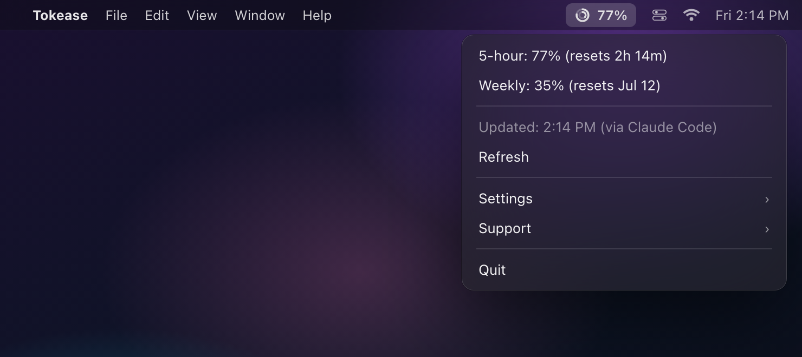

Tokease shows your 5-hour & weekly limits for Claude in the menu bar. Zero config: it reads only what official Claude apps already publish on your Mac. No token read, no hidden API call.
Two rings fill as you spend your 5-hour and weekly windows, and a notification (on by default, toggleable) alerts you at 80% and again at 95%. In short, a lightweight Claude rate limit monitor for your Mac: you see the wall coming before you hit it.

Install the app and keep the Claude desktop app open. That's it. No account, no API keys, nothing to configure.
One line: brew install tpatrouillat/tap/tokease. Or clone the repo and run the install script to audit every line first.
If the Claude desktop app is running, Tokease auto-detects the quota history it refreshes about every 5 minutes. Nothing to wire, nothing to configure.
Your two rings light up in the menu bar, 5-hour and weekly, with an optional notification at 80% and 95%. Bonus for CLI users: wire the included statusline script into Claude Code to add reset countdowns.
Other trackers read your Claude credentials from the Keychain. Tokease doesn't touch them. It only reads what official Claude apps already publish on your own Mac.
Tokease reads two local files, both written by official Claude apps for their own use: the quota history the Claude desktop app refreshes while it runs, and the documented rate_limits fields Claude Code 2.1.x and later hand to their statusline script. It reads exactly those, and nothing else. It never reads your OAuth token, never opens your Keychain, and never calls any Anthropic endpoint.
No server, no analytics, no telemetry, no phone-home. There is no token to misuse and nothing that leaves your Mac. The whole thing is a short, MIT-licensed Python file: read tracker.py on GitHub and verify it yourself.
Tokease never reads your OAuth token. CodexBar and ClaudeBar read the Keychain. Tokease doesn't.
Runs entirely on your Mac. No backend, no cloud, no account. Nothing to breach.
One short Python file, MIT-licensed, zero telemetry. Read it, fork it, run it from source in 30 seconds.
No tiers, no trial, no upsell. Open source under the MIT license.
Like it? A GitHub star is always welcome.
Everything people ask before installing.
rate_limits fields Claude Code hands to its statusline. Token-free by construction, not by promise.rate_limits fields to their statusline, which adds reset times. No token read, no hidden API call./usage and the statusline show your limits while you're looking at the terminal, which is when you least need the reminder. Tokease shows them in the menu bar while you're in your editor or a browser, sends an optional notification when you cross 80% and 95%, and keeps the last known value (flagged stale) in between.claude in a terminal) and the rings stay fresh.brew install tpatrouillat/tap/tokease, or clone the repo and run the install script. If the Claude desktop app is running, you are done. Optionally wire the statusline capture script into Claude Code (a one-line settings change) for reset countdowns (see the Install section).Both options are free. Requires macOS and a Claude Pro or Max plan.
One command. Installs a self-contained environment, with no Apple Developer warnings.
Audit every line. Clone, install, run. About 30 seconds. Needs Python 3.10+ (the Homebrew path ships its own).
No email, no newsletter, no account to hand over. That would be off-brand for a tool that never reads your token. Watch the repo and GitHub tells you when a new version ships, or when a change in what Claude apps publish locally means Tokease has to follow.
On GitHub, choose Watch → Custom → Releases to get only what matters.